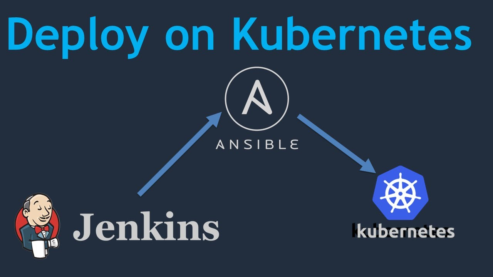
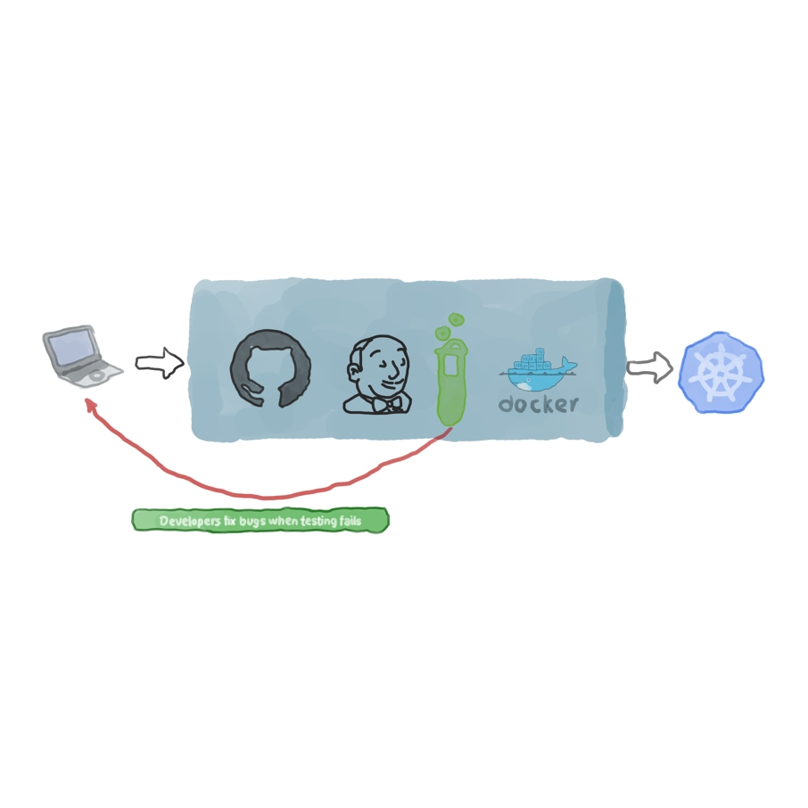
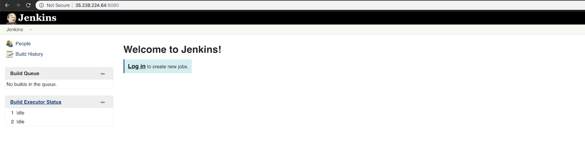
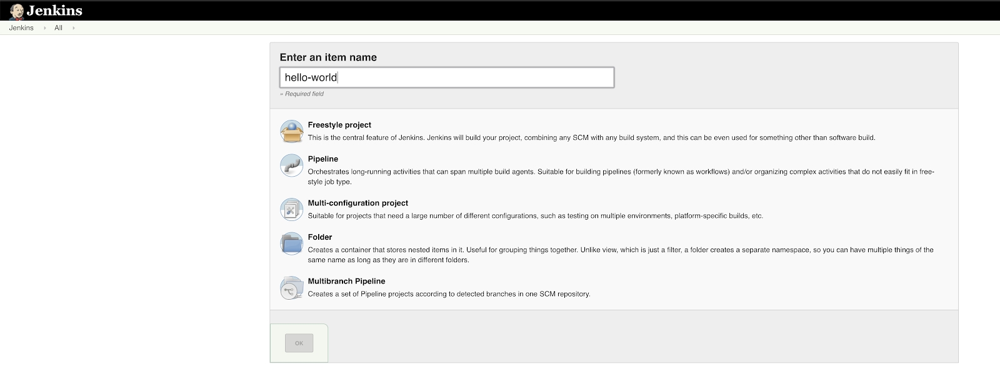
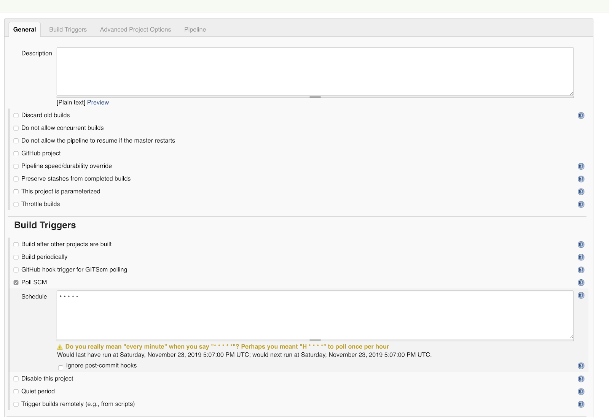
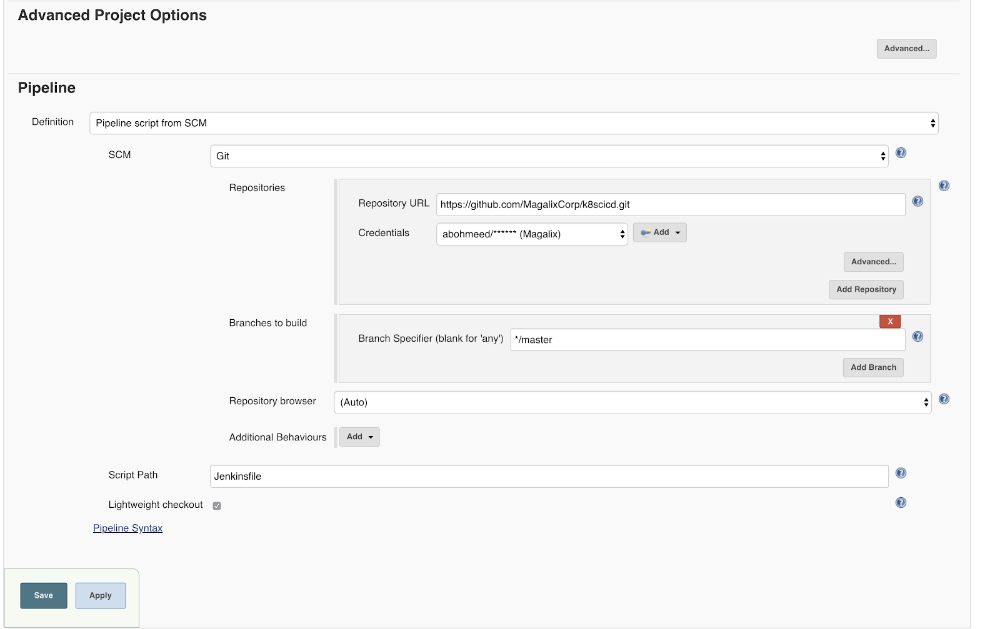
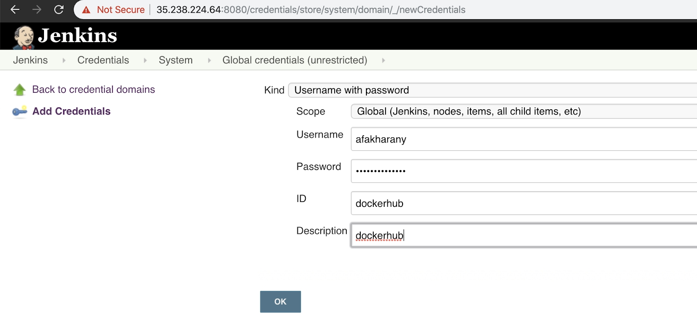
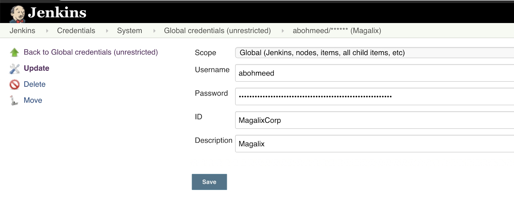
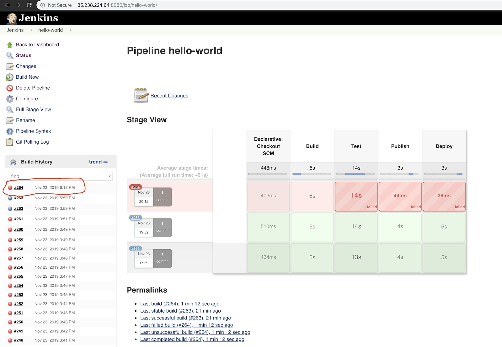
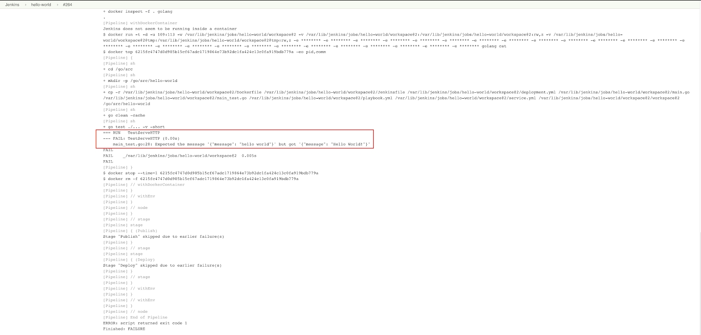

使用 Kubernetes 和 Jenkins 创建一个 CI/CD 流水线

CI/CD 尝试解决什么问题？
CI/CD 同 DevOps、Agile、Scrum、Kanban、自动化以及其他术语一样，是一个一起被经常提及的专用术语。有时候，它被当做工作流的一部分，但是并没有搞清楚这是什么或者为什么它会被采用。对于年轻的 DevOps 工程师来说，使用 CI/CD 理所当然已经成为了常态，可能他们并没有看到“传统”的软件发布流程而因此不欣赏 CI/CD。
CI/CD 表示持续集成/持续交付和/或部署。如果一个团队不接入 CI/CD 流程就必须要在产生一个新的软件产品时经历如下的阶段：
产品经理（代表了客户利益）提供了产品需要有的功能以及产品需要遵从的行为。文档必须要越详实越好。
具有业务分析能力的开发人员开始对应用进行编码，执行单元测试，然后将结果提交到版本控制系统（例如 git）。
一旦开发阶段完成，项目移交到 QA。对产品进行多轮测试，比如用户验收测试，集成测试，性能测试。在此期间，直到 QA 阶段完成之前都不会有任何代码上的改动。如果有任何 bug 被发现，需要回退给开发人员做修改，然后再将产品移交给 QA。
一旦 QA 完成，操作团队会将代码部署到生产环境中。
上述工作流存在一些弊端：
首先，从产品经理提出需求到产品具备开发条件中间会消耗太多时间。
对开发人员来说，从写了一个月甚至更长时间的代码中去定位问题真的很困难。请记住，bug 只能是在开发阶段完成 QA 阶段开始后被发现。
当有一个*紧急的*代码修复比如像一个严重的 bug 需要热修复时，QA 阶段可能会因为需要尽快部署而被缩短。
不同的团队之间很少会有协作，当 bug 出现的时候，人们就开始互相甩锅互相指责。每个人从一开始只是关心项目中自己的那部分工作而忽视了共同的目标。
CI/CD 通过引入自动化来解决上述的问题。代码中的每次改动一旦推送至版本控制系统，进行测试，然后在部署到用户使用的生产环境之前部署至预生产/UAT 环境进行进一步的测试。自动化确保了整体流程的快速，可信赖，可重复，以及不容易出错。
所以，什么是 CI/CD 呢？
关于这个主题已经有著作撰写完毕。如何，为什么，以及什么时候在你的架构中使用。然而，我们总是倾向于轻理论重实践。话虽如此，下文简单介绍了一下一旦修改的代码被提交后会执行哪些自动化步骤：
持续集成（CI）：第一步不包括 QA。换句话说，它不关注代码是否提供了用户需要的功能。相反，它确保了代码的质量。通过单元测试，集成测试，开发人员能很快的就会发现代码质量中的缺陷。我们可以增加代码覆盖率的检查以及静态分析让代码质量保证做的更加完善。
用户验收测试：这是 CD 流程的第一部分。这个阶段，会对代码执行自动化测试从而确保代码符合用户的期望。比如说，一个 web 应用没有任何报错产生能正常运行，但是客户想让访问者在导航到主页之前先进入到登录页面。但是当前的代码直接让访问者导航到了主页面，这与客户的需求不相符。这种问题会在 UAT 测试时被指出。而在非 CD 环境，就成了人工的 QA 测试人员的工作。
Deployment：这是 CD 流程的第二部分。它包括在托管应用的服务器/ pods /容器上面执行更改来应用更新的版本。这会在自动化的方法下完成，最好通过一个配置管理工具来做这些事情，比如 Ansible、Chef 或者 Puppet。
什么是流水线？
流水线是一个有着简单的概念的花哨术语；当你有一些需要按照顺序依次执行的脚本用来实现一个共同的目标时，这些组合起来可以称为“流水线”。比如说，在 Jenkins 里，一个流水线包含了一个或多个一次构建需要成功必须全部执行的 stages 。使用 stages 能够可视化整个流程，能够看到每个阶段使用了多长时间，然后能够准确得出构建过程的哪个地方是失败的。
实验：为一个 Golang 应用创建一个流水线
在这个实验中，我们构建一个持续交付（CD）的流水线。我们使用一个用 Go 语言编写的简单的小程序。为了简单起见，我们只对代码运行一种类型的测试。实验的前期工作如下：
一个运行的 Jenkins 实例。它可以是一个云实例，一个虚拟机，一个裸机或者是一个 docker 容器。必须是从互联网上可获得的，这样仓库才可以通过 web-hooks 连上 Jenkins。
一个 GitHub 账号。尽管我们在这个例子中使用 GitHub，程序使用其他仓库同样可以，例如少量修改后的 Bitbucket。
流水线可以用下图做一个说明：

第一步：应用程序文件
我们的实验程序会对任意的 GET 请求回复 ‘Hello World’。创建一个名称为 main.go 的文件然后添加如下的代码：
package main
import (
"log"
"net/http"
)
type Server struct{}
func (s *Server) ServeHTTP(w http.ResponseWriter, r *http.Request) {
w.WriteHeader(http.StatusOK)
w.Header().Set("Content-Type", "application/json")
w.Write([]byte(`{"message": "hello world"}`))
}
func main() {
s := &Server{}
http.Handle("/", s)
log.Fatal(http.ListenAndServe(":8080", nil))
}
当我们构建一个 CD 流水线时，我们应该进行一些测试。我们代码是如此的简单以至于它仅仅只需要一个测试用例；能够确保我们在输入根 URL 时得到正确的字符串。在同目录下创建名为 main_test.go 的文件然后添加如下代码：
package main
import (
"log"
"net/http"
)
type Server struct{}
func (s *Server) ServeHTTP(w http.ResponseWriter, r *http.Request) {
w.WriteHeader(http.StatusOK)
w.Header().Set("Content-Type", "application/json")
w.Write([]byte(`{"message": "hello world"}`))
}
func main() {
s := &Server{}
http.Handle("/", s)
log.Fatal(http.ListenAndServe(":8080", nil))
}
我们同样有一些其他用来帮助我们部署应用程序的文件，称为：
Dockerfile
这就是我们对我们的应用进行打包的地方：
FROM golang:alpine AS build-env
RUN mkdir /go/src/app && apk update && apk add git
ADD main.go /go/src/app/
WORKDIR /go/src/app
RUN CGO_ENABLED=0 GOOS=linux go build -a -installsuffix cgo -ldflags '-extldflags "-static"' -o app .
FROM scratch
WORKDIR /app
COPY --from=build-env /go/src/app/app .
ENTRYPOINT [ "./app" ]
Dcokerfile 是一个多阶段的文件能让镜像保持的越小越好。它从基于 golang:alpine 构建镜像开始。生成的二进制文件在第二个镜像中使用，它仅仅是一个临时的镜像，这个镜像没有依赖或者库文件，只有用来启动应用的二进制文件。
Service
由于我们使用 Kubernetes 作为托管该应用程序的平台，我们需要至少一个 service 和一个 deployment。我们的 service.yml 长这样：
apiVersion: v1
kind: Service
metadata:
name: hello-svc
spec:
selector:
role: app
ports:
- protocol: TCP
port: 80
targetPort: 8080
nodePort: 32000
type: NodePort
这个文件的定义没有什么特别的地方，只有一个 NodePort 作为其类型的 Service。它会监听任何 IP 地址的集群节点上的 32000 端口。传入的连接将中继到 8080 端口上。而作为内部通信，这个服务在 80 端口上进行监听。
deployment
应用程序本身，一旦容器化了，就可以通过一个 Deployment 资源部署到 Kubernetes。deployment.yml 如下所示：
apiVersion: apps/v1
kind: Deployment
metadata:
name: hello-deployment
labels:
role: app
spec:
replicas: 2
selector:
matchLabels:
role: app
template:
metadata:
labels:
role: app
spec:
containers:
- name: app
image: ""
resources:
requests:
cpu: 10m
这个部署文件里的定义最有意思的地方就是 image 部分。不同于硬编码镜像名称和标签的方式，我们使用了一个变量。后面的内容，我们会看到怎样将该变量用作 Ansible 的模板以及通过命令替换镜像名称（以及部署用的其他参数）。
Playbook
这个实验中，我们使用 Ansible 作为部署工具。还有许多其他的方式用来部署 Kubernetes 资源包括 Helm Charts，但是我认为 Ansible 是一个相对简单一些的选择。Ansible 使用 playbooks 来组织它的操作。我们的 playbook.yml 文件如下所示：
- hosts: localhost
tasks:
- name: Deploy the service
k8s:
state: present
definition: ""
validate_certs: no
namespace: default
- name: Deploy the application
k8s:
state: present
validate_certs: no
namespace: default
definition: ""
Ansible 已经包括了 k8s 模块用来处理和 Kubernetes API 服务器的通信。所以我们不需要安装 kubectl 但是我们需要一个有效的 kubeconfig 文件来连接到集群（后面会详细介绍）。让我们快速讨论一下这个 playbook 重要的部分：
这个 playbook 用来部署服务以及部署资源到集群上。
当我们需要在动态执行的过程中向定义文件中注入数据时，我们需要使用定义文件作为模板这样变量可以应用到外部环境。
为此，Ansible 具有查找功能，你可以在其中传递一个有效的 YAML 文件作为模板。Ansible 支持许多将变量注入模板的方法。在这个实验中，我们使用命令行的方法。
第二部：安装 Jenkins、Ansible 和 Docker
让我们开始安装 Ansible 然后使用它自动部署一个 Jenkins 服务器以及 Docker 运行环境。我们同样需要安装 openshift Python 模块用来将 Ansible 连接到 Kubernetes。 Ansible 的安装非常简单；只需要安装 Python 然后使用 pip 安装 Ansible：
登录 Jenkins 实例。
安装 Python3，Ansible，以及 openshift 模块：
sudo apt update && sudo apt install -y python3 && sudo apt install -y python3-pip && sudo pip3 install ansible && sudo pip3 install openshift
- 默认情况下，pip 会将二进制安装到用户主文件夹的隐藏目录中。我们需要添加这个路径到 $PATH 环境变量中因此我们可以很轻松调用如下命令：
echo "export PATH=$PATH:~/.local/bin" >> ~/.bashrc && . ~/.bashrc
- 安装必要的 Ansible 角色用来部署一个 Jenkins 实例。
ansible-galaxy install geerlingguy.jenkins
- 安装 Dcoker 角色：
ansible-galaxy install geerlingguy.docker
- 创建一个 playbook.yml 添加下面的代码：
- hosts: localhost
become: yes
vars:
jenkins_hostname: 35.238.224.64
docker_users:
- jenkins
roles:
- role: geerlingguy.jenkins
- role: geerlingguy.docker
通过下面的命令运行这个 playbook：ansible-playbook playbook.yaml。注意到我们使用实例的公共 IP 地址作为 Jenkins 的主机地址。如果你使用 DNS，你或许需要将该实例更换成 DNS 域名。另外，注意你必须在 playbook 运行之前允许 8080 端口通过防火墙（如果有的话）。
过几分钟，Jenkins 应该会被安装完成，你可以通过这台机器的 IP 地址（或者是 DNS 域名）还有端口8080访问到 Jenkins：

点击登录链接使用 “admin” 作为用户名，“admin” 作为登录密码。这些都是通过 Ansible 角色创建的默认凭据。当 Jenkins 在生产环境中使用时，你可以（应该）修改这些默认值。这个可以通过设置角色变量来进行设置。你可以参考角色官方页面。
你需要做的最后一件事情就是安装下面这些我们这个实验中用到的插件：
- git
- pipeline
- CloudBees Docker Build and Publish
- GitHub
第三步：配置 Jenkins 用户来连接到集群上
之前我们提到了，这个实验假设你已经有一个启动的 Kubernetes 集群。为了让 Jenkins 连接到这个集群上，我们需要添加必要的 kubeconfig 文件。在这个特定的实验中，我们使用主机在 Google Cloud 的 Kubernetes 集群所以我们可以使用 gcloud command。因环境而异。但是不管什么情况，我们都必须拷贝 kubeconfig 文件到 Jenkins 的用户目录下，如下所示：
$ sudo cp ~/.kube/config ~jenkins/.kube/
$ sudo chown -R jenkins: ~jenkins/.kube/
需要记住的是你使用的账号必须要有必要的权限用来创建管理 Deployment 和 Service。
第四步：创建 Jenkins 流水线任务

创建一个新的 Jenkins 任务选择流水线类型的任务。任务的设置如下图所示：


我们修改的配置有：
我们使用 Poll SCM 作为构建触发器；设置这个选项来让 Jenkins 定期检查 Git 仓库（按 * * * * 指示的每分钟进行检查）。如果仓库从上次轮询后做了修改，任务就会被触发。
从流水线本身来说，我们指定了仓库的 URL 以及凭据。分支是 master 分支。
这个实验中，我们在一个 Jenkinsfile 中添加了所有的任务的代码，Jenkinsfile 跟代码一样存放在同一个仓库当中。Jenkinsfile 我们会在后面的文章中进行讨论。
第五步：配置 GitHub 和 Docker Hub 的 Jenkins 凭据
转到 /credentials/store/system/domain/_/newCredentials 链接下然后添加目标凭据。请确认你每个凭据均提供一个有意义的 ID 和描述信息因为你会在后面使用到它们。


第六步：创建 Jenkinsfile
Jenkinsfile 是用来指导 Jenkins 如何构建，测试，容器化，发布以及交付我们的应用程序的文件。我们的 Jenkinsfile 长这样：
pipeline {
agent any
environment {
registry = "magalixcorp/k8scicd"
GOCACHE = "/tmp"
}
stages {
stage('Build') {
agent {
docker {
image 'golang'
}
}
steps {
// Create our project directory.
sh 'cd ${GOPATH}/src'
sh 'mkdir -p ${GOPATH}/src/hello-world'
// Copy all files in our Jenkins workspace to our project directory.
sh 'cp -r ${WORKSPACE}/* ${GOPATH}/src/hello-world'
// Build the app.
sh 'go build'
}
}
stage('Test') {
agent {
docker {
image 'golang'
}
}
steps {
// Create our project directory.
sh 'cd ${GOPATH}/src'
sh 'mkdir -p ${GOPATH}/src/hello-world'
// Copy all files in our Jenkins workspace to our project directory.
sh 'cp -r ${WORKSPACE}/* ${GOPATH}/src/hello-world'
// Remove cached test results.
sh 'go clean -cache'
// Run Unit Tests.
sh 'go test ./... -v -short'
}
}
stage('Publish') {
environment {
registryCredential = 'dockerhub'
}
steps{
script {
def appimage = docker.build registry + ":$BUILD_NUMBER"
docker.withRegistry( '', registryCredential ) {
appimage.push()
appimage.push('latest')
}
}
}
}
stage ('Deploy') {
steps {
script{
def image_id = registry + ":$BUILD_NUMBER"
sh "ansible-playbook playbook.yml --extra-vars \"image_id=${image_id}\""
}
}
}
}
}
这个文件比它本身看起来要简单的多。基本上，这个流水线包括了 4 个阶段：
在哪里构建我们的 Go 二进制文件从而确保构建过程中无错误出现。
在哪里进行一个简单的 UAT 测试能确保应用程序如预期运行。
发布，在哪里构建 Docker 镜像然后推送到仓库。在这之后，任何环境都可以使用它。
部署，这是流水线的最后一步， Ansible 会与 Kubernetes 通信然后应用这些定义文件。
现在，让我们讨论下这个 Jenkinsfile 中重要的部分：
一开始的两个阶段大致差不多。它们都是使用 golang Docker 镜像来构建/测试应用程序。让阶段在所有构建和测试均已准备就绪的容器中运行始终是一个很好的实践。另外的选择就是安装这些工具到 master 服务器上或者是其中一个节点上。当你需要测试不同版本的工具时问题容易显现出来。例如，或许你想使用 Go 1.9 构建测试你的代码，但是我们的应用尚未准备好支持最新版本的 Golang。所有的东西都放在镜像中的话修改版本号或者甚至是镜像类型会和修改字符串一样简单。
在发布阶段（从42行开始）开头定义了一个环境变量，这个环境变量会在后面的步骤中使用到。这个变量指向的是我们先前步骤在 Jenkins 中添加的 Docker Hub 凭据。
48 行：我们使用 docker 插件来构建镜像。它默认使用我们 registry 中的 Dockerfile 然后添加构建号作为镜像的 tag。后面，当你需要决定哪次 Jenkins 构建作为当前运行容器的来源时这会非常的重要。
49-51行：镜像构建成功后，我们使用构建号将其推送到 Docker Hub。另外，我们在镜像上添加了 “latest” 的标签（一个第二标签）因此我们允许用户不需要指定构建号即可拉取镜像
56-60行：在部署阶段，我们将部署和服务定义文件应用到集群上。我们使用之前讨论过的 Ansible 的 playbook。记住，我们传递 image_id 作为命令行的参数。该值将自动替换部署文件中的镜像名称。
测试我们的 CD 流水线
这部分是真正将我们的工作进行测试的内容。我们将会提交代码到 GitHub 上确保我们的代码直到到达集群之前都是经过流水线操作的。
添加我们的文件：git add *
提交我们的改动：git commit -m “Initial commit”
推送到GitHub：git push
在 Jenkins 中，我们可以等待任务自动被触发，或者我们只需要点一下“立即构建”。
如果任务成功了，我们可以使用下面的命令验证我们部署好的的应用程序：
获取节点的 IP 地址：
kubectl get nodes -o wide
NAME STATUS ROLES AGE VERSION INTERNAL-IP EXTERNAL-IP OS-IMAGE KERNEL-VERSION CONTAINER-RUNTIME
gke-security-lab-default-pool-46f98c95-qsdj Ready 7d v1.13.11-gke.9 10.128.0.59 35.193.211.74 Container-Optimized OS from Google 4.14.145+ docker://18.9.7
现在让我们向应用程序发起一个 HTTP 请求：
$ curl 35.193.211.74:32000
{"message": "hello world"}
OK，我们可以看到应用程序工作正常。让我们在代码中故意制造一个错误以确保流水线不会将错误的代码应用到目标环境中：
将应显示的信息修改为“Hello World！”，注意到我们将每个单词的首字母大写并在末尾添加了一个感叹号。然而客户或许不想让信息这样显示，流水线应该在 Test 阶段停止。
首先，让我们做一些改动。main.go 文件现在看起来是这样的：
package main
import (
"log"
"net/http"
)
type Server struct{}
func (s *Server) ServeHTTP(w http.ResponseWriter, r *http.Request) {
w.WriteHeader(http.StatusOK)
w.Header().Set("Content-Type", "application/json")
w.Write([]byte(`{"message": "Hello World!"}`))
}
func main() {
s := &Server{}
http.Handle("/", s)
log.Fatal(http.ListenAndServe(":8080", nil))
}
下一步，让我们提交和推送我们的代码：
$ git add main.go
$ git commit -m "Changes the greeting message"
[master 24a310e] Changes the greeting message
1 file changed, 1 insertion(+), 1 deletion(-)
$ git push
Counting objects: 3, done.
Delta compression using up to 4 threads.
Compressing objects: 100% (3/3), done.
Writing objects: 100% (3/3), 319 bytes | 319.00 KiB/s, done.
Total 3 (delta 2), reused 0 (delta 0)
remote: Resolving deltas: 100% (2/2), completed with 2 local objects.
To https://github.com/MagalixCorp/k8scicd.git
7954e03..24a310e master -> master
回到 Jenkins，我们可以看到最后一次构建失败了：

点击失败的任务，我们可以看到这个任务失败的原因：

这样我们错误的代码永远不会进入到目标环境上。
内容提要
CI/CD 是一个遵循敏捷方法论的任何现代环境的一部分。
通过流水线，你可以确保从版本控制系统到目标环境（测试/预生产/生产/等等）的平稳过渡，同时应用所有必要的测试以及质量控制实践。
这篇文章中，我们有一个实践性的实验来构建一个持续交付的流水线来部署一个 Golang 应用程序。
通过 Jenkins，我们可以从仓库拉取代码，构建以及使用一个相关联的 Docker 镜像进行测试。
下一步，我们进行容器化进而将已通过我们的测试的应用程序推送到 Docker Hub。
最后，我们使用 Ansible 将应用程序部署到运行在 Kubernetes 上的目标环境当中。
使用 Jenkins 流水线和 Ansible 可以非常轻松灵活地修改工作流。例如，我们可以在 Test 阶段增加更多的测试，我们可以修改用来构建和测试代码的 Go 的版本号，另外我们还可以使用更多的变量在其他诸如部署和服务定义的地方进行修改。
最好的部分是我们使用 Kubernetes 部署，这能够确保当我们在零停机时间的情况下改变容器镜像。因为在默认情况下部署使用滚动更新的方式来一次性终止和重建容器。只有在新的容器启动和健康后旧的容器才会终止。